Open the Study Hub login, enter your approved UNE email, and this note will unlock automatically.
The 2025 guideline approach — lifestyle for everyone, one drug or a single-pill combination by stage and risk — then ACE inhibitors, ARBs, calcium channel blockers and diuretics drug by drug, pregnancy, and the four lecture cases.
Learning objectives · how you'll be tested
Identify the name, indication, mechanism of action, adverse effects, contraindications and drug–drug interactions of drugs used to treat hypertension.
Apply them to a clinical scenario (the lecture is case-based — four cases, Topic 8).
Names, indications, MOA, adverse effects, contraindications and DDIs — the pharmacology domain. Clinical lectures cover the same topics from the clinical side; his questions only go "clinical" when there's a clear gold-standard best drug or every other option is contraindicated. Tip from lecture: split-screen the treatment algorithm (Topic 3) while working the cases.
"Pregnant" can be one word buried in a vignette. Read fast and you'll give a first-line drug (ACE inhibitor / ARB) that's contraindicated. Slow down on patient variables: age, pregnancy, comorbidities, intolerances.
Four sources of high pressure · the silent killer
| Type | Pattern | Who |
|---|---|---|
| Cardiac (pump-based) | ↑ CO, normal SVR | Tends to be younger patients |
| Vascular | Normal CO, ↑ SVR (endothelial / smooth muscle dysfunction) | Tends to be the ageing population |
| Renal (volume-based) | Excess Na⁺ and H₂O retention → ↑ CO and ↑ SVR | — |
| Neuroendocrine (secondary) | Catecholamines — pheochromocytoma · aldosterone — primary hyperaldosteronism · thyroid hormone — hyperthyroidism | Treat the cause → may not need to target the pump or RAAS at all |
In reality most patients have a mix, and cardiovascular disease is highly comorbid — untreated hypertension progresses to heart failure. Hypertension is invisible ("silent killer"), and barriers to primary care (wait-lists, cost, transport, time off work) mean it's often found only when it has already caused a comorbid disease.
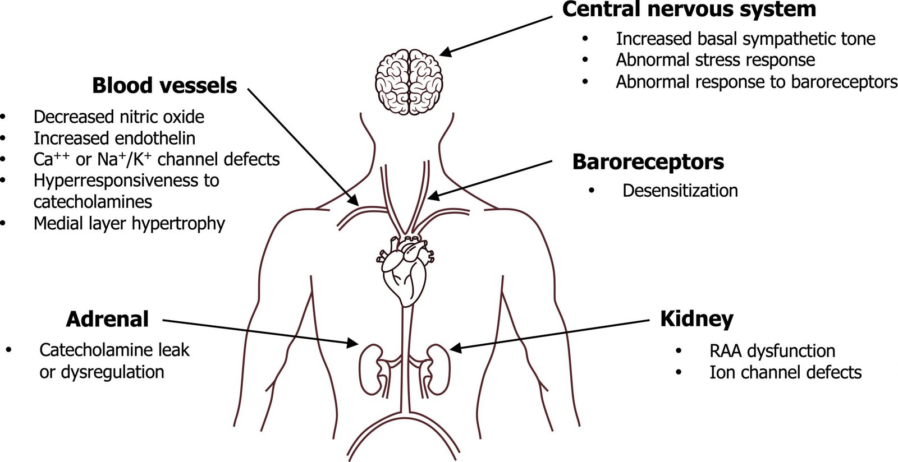
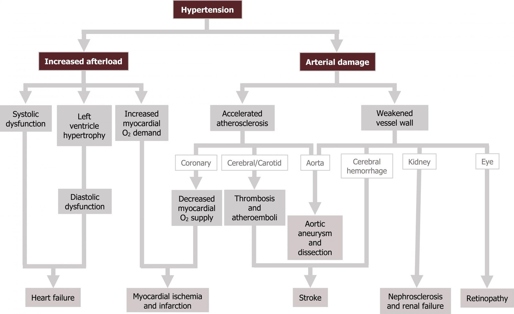
Baroreceptors reset to a pressure that's held long enough — so the body defends the high pressure as normal. Hold the pressure low long enough and the compensations fade and the receptors re-set lower. Hence "see you in 2–4 weeks" after starting a drug — and the problem of patients lost to follow-up, which pushed the guidelines toward starting two drugs.
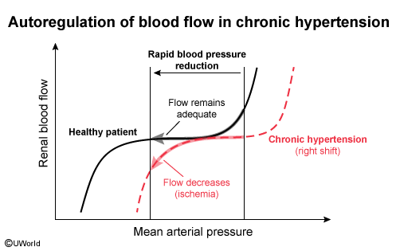
What counts as hypotension is harder than a number: it depends on the patient's baseline and symptoms (altered consciousness, dizziness). Normal is roughly ≤120/80.
Q: A 72-year-old has BP 170/92 with a normal cardiac output and high systemic vascular resistance. Which physiologic type of hypertension is typical of this age group?
Vascular (endothelial/smooth-muscle) hypertension — normal CO, increased SVR — typical of the ageing population; pump-based (↑CO) is more typical of younger patients.
Lifestyle for everyone · drugs against compensation
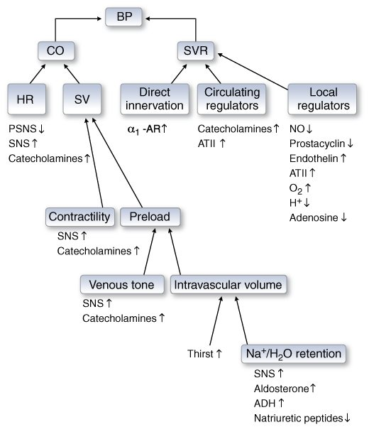
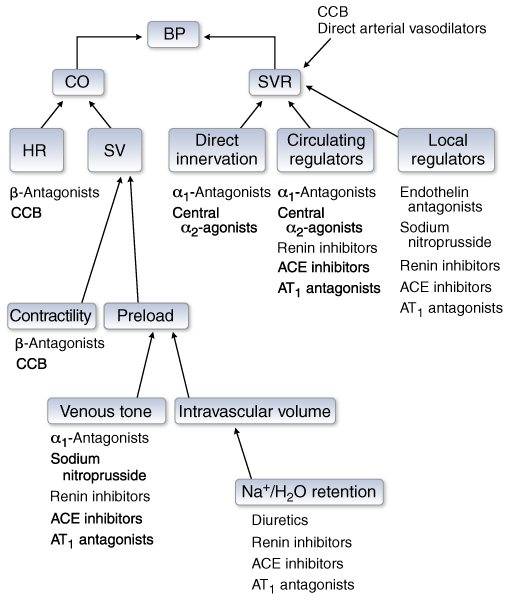
Lower BP with one drug and two things happen: the baroreceptor reflex ↑ sympathetic outflow (↑ HR, contractility, vasoconstriction — the reason you don't faint standing up), and ↓ renal perfusion ↑ renin → RAAS → Na⁺/H₂O retention + thirst. Block one branch and the other can bring BP back — the rationale for complementary two-drug therapy.
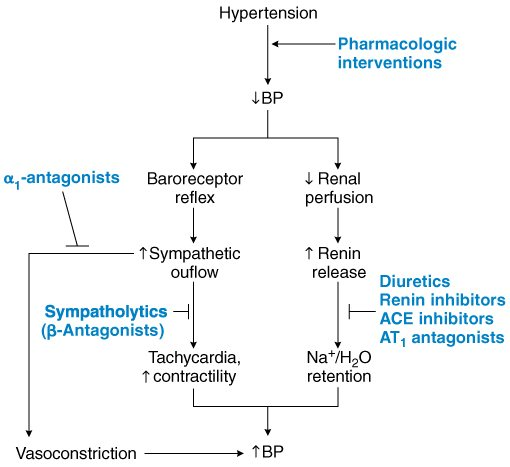
Inputs include sex, age, systolic BP, cholesterol, BMI, eGFR, diabetes, smoking. New: zip code (social deprivation — food and care deserts). Removed: race. The threshold that matters in the algorithm is a 10-year ASCVD risk of ≥7.5%. (Lecture screenshot was on the ASCVD tab; the numbers come out similar.)
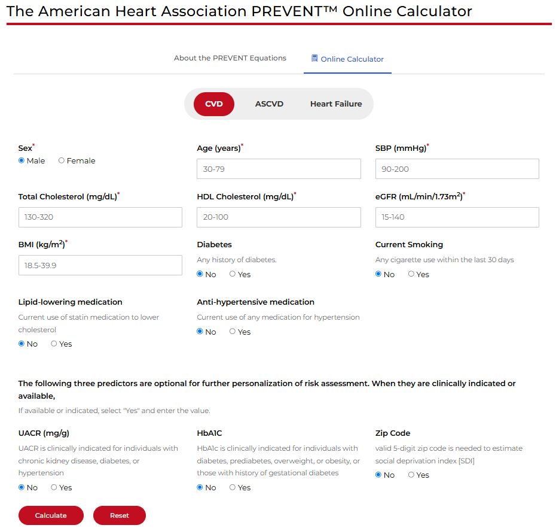
Q: A patient is started on amlodipine alone. Two weeks later BP has fallen less than expected and plasma renin is up. Why, and what class would complement it?
Lower renal perfusion triggered RAAS compensation (renin → AII → aldosterone → volume). Add a RAS inhibitor (ACEi or ARB) — the preferred single-pill pairing with a dihydropyridine CCB.
2025 guideline · stage + risk → lifestyle, one drug, or two
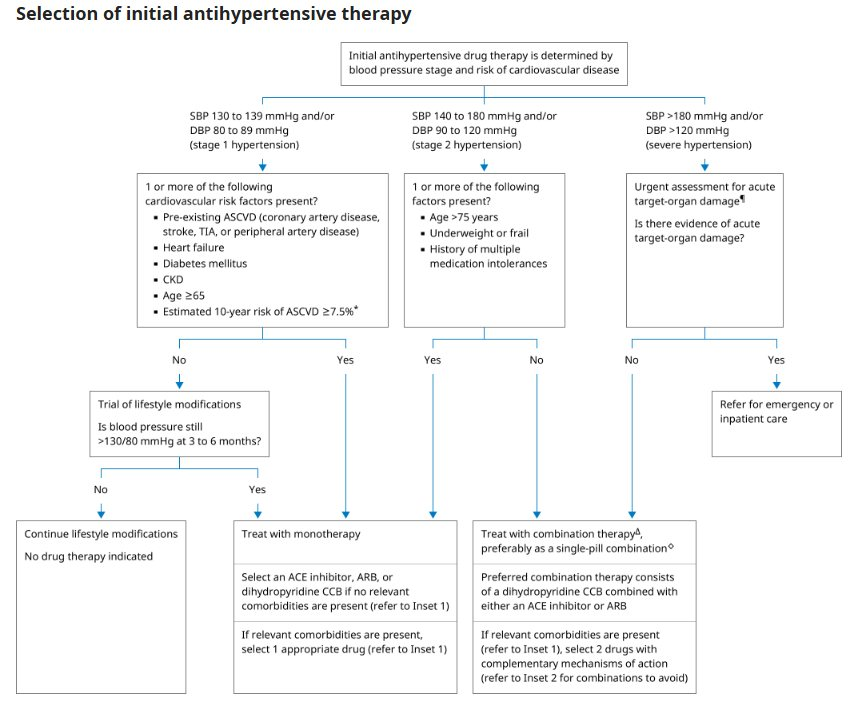
| Stage | BP | Ask | → Then |
|---|---|---|---|
| Stage 1 | SBP 130–139 and/or DBP 80–89 | Any of: ASCVD (CAD, stroke/TIA, PAD), HF, DM, CKD, age ≥65, 10-y ASCVD risk ≥7.5%? | Yes → monotherapy. No → lifestyle; recheck at 3–6 months; still >130/80 → monotherapy |
| Stage 2 | SBP 140–180 and/or DBP 90–120 | Any of: age >75, underweight or frail, multiple medication intolerances? | Yes → monotherapy. No → combination therapy, preferably a single pill |
| Severe | SBP >180 and/or DBP >120 | Urgent assessment: acute target-organ damage? | Yes → emergency / inpatient care. No → combination therapy |
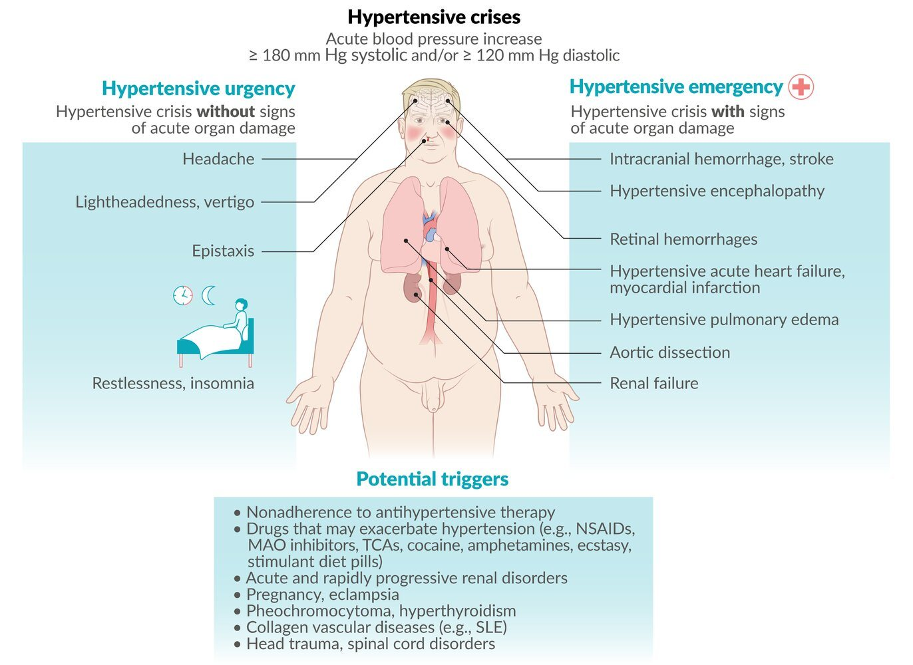
| Comorbidity | Choose | Why (mechanism) |
|---|---|---|
| Osteoporosis, edema, calcium nephrolithiasis with hypercalciuria | Thiazide-like diuretic | ↑ Ca²⁺ reabsorption → less Ca²⁺ in urine, more in bone |
| CKD with albuminuria | ACEi or ARB | Target RAAS (renal protection) |
| Atrial fibrillation | β-blocker or non-DHP CCB | Rate control at the AV node (diltiazem does nodes + vessels) |
| Recent MI | β-blocker, ACEi or ARB | Already started for secondary prevention — pick one tuned for BP |
| Orthostatic hypotension | DHP CCB, ACEi or ARB | Avoid sympatholytics / diuretics |
| Heart failure (any EF) | ACEi, ARB, β-blocker, diuretics, MRA, others | Mortality-benefit classes |
| May become pregnant | DHP CCB | RAS inhibitors are teratogenic |
| BPH (lecture example) | α1 antagonist (prazosin) | Relaxes GU smooth muscle and peripheral vessels — not otherwise first-line |
ACEi + ARB (or either + aliskiren) — stacked hyperkalemia, renal impairment, hypotension. Never give two RAAS blockers.
β-blocker + non-dihydropyridine CCB (verapamil, diltiazem) — additive nodal / cardiac depression; IV-push verapamil on a β-blocker → electromechanical decoupling (acute drug-induced heart failure).
Two sympatholytics — α1 antagonist + clonidine, β-blocker + clonidine, two α antagonists: only one branch of BP control is hit (compensation persists) while side effects stack → overshoot.
ACEi / ARB in anyone who may become pregnant.
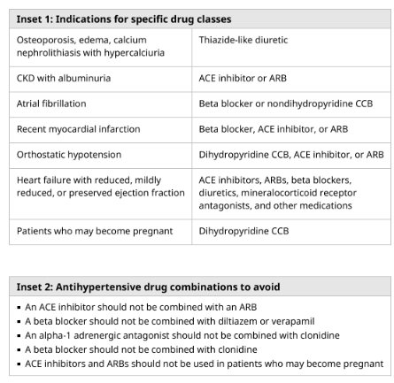
Three-drug single pills now exist but are for stepped care, not initiation — start with two.
Q: A 60-year-old with BP 152/96 (confirmed), no frailty, no drug intolerances. Mono or combination therapy, and which?
Stage 2, age ≤75, not frail → combination therapy, ideally one pill: a dihydropyridine CCB + ACEi or ARB (ACEi/ARB + thiazide also acceptable).
Q: A patient on metoprolol for atrial fibrillation develops hypertension. Why is adding verapamil a poor choice?
β-blocker + non-DHP CCB = additive depression of the SA/AV node and contractility (bradycardia, heart block, acute heart failure). Add a DHP CCB, ACEi/ARB or thiazide instead.
-prils, -sartans, aliskiren
-prilACE inhibitor (captopril, lisinopril, enalapril)
-sartanARB (losartan, valsartan)
-kirenDirect renin inhibitor (aliskiren)
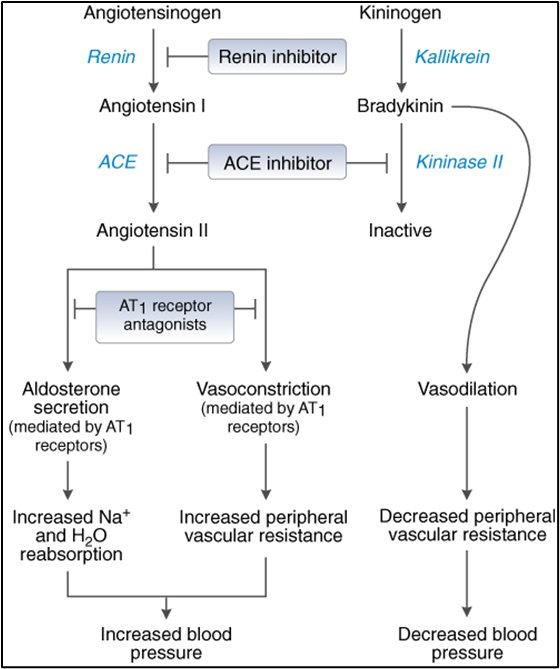
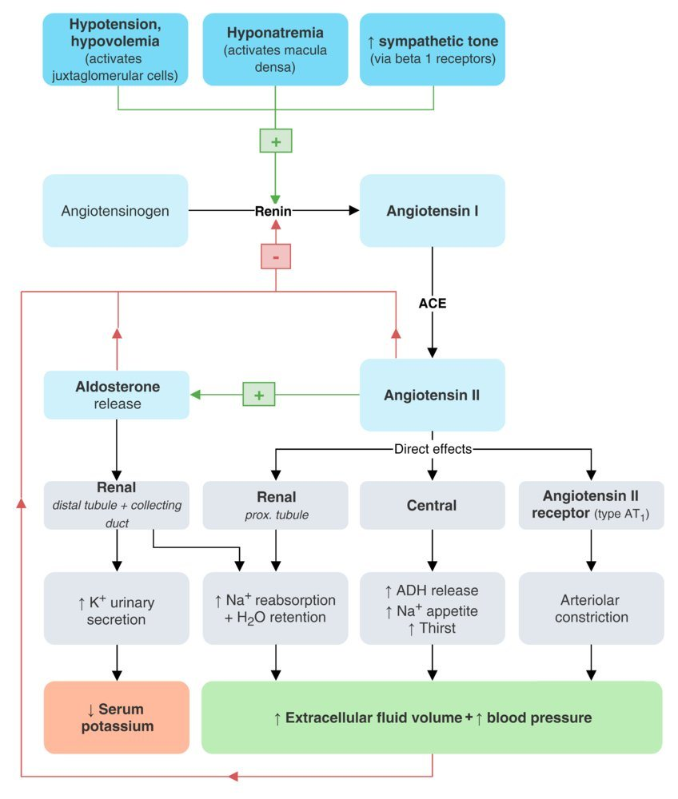
MOA: block ACE → no angiotensin II (less vasoconstriction and aldosterone) and bradykinin accumulates (ACE = kininase II) → extra vasodilation.
Indications: hypertension, heart failure.
PK (know which is a prodrug): captopril — active as given + active metabolite · enalapril — prodrug → active form · lisinopril — active as given, excreted unchanged.
Adverse effects: hyperkalemia · angioedema (5× risk in Black patients; genetic risk factors emerging) · dry cough (bradykinin; common enough that some clinicians start with an ARB).
Contraindications: history of angioedema · pregnancy (and patients planning pregnancy).
MOA: competitive antagonist at AT1R — blocks AII's action; no bradykinin build-up.
Indications: hypertension · diabetic nephropathy (losartan) · heart failure and post-MI (valsartan).
AEs (slide): rhabdomyolysis, hepatotoxicity, renal failure, diarrhea (+ hyperkalemia as with any RASi).
CI / DDI: pregnancy · with an ACEi (renal impairment, hyperkalemia, hypotension) · with aliskiren in diabetics · small risk of cross-reactive angioedema.
Blocks renin → no angiotensin I. Never with another RAAS drug (esp. ACEi/ARB in diabetics). Contraindicated in pregnancy.
ACE normally destroys bradykinin; block it and bradykinin accumulates → dry cough and angioedema (lips, tongue, face; also pharynx/larynx). Clinical pearls from lecture:
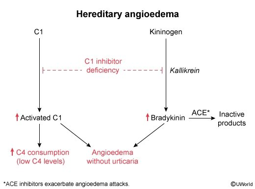
BP controlled on lisinopril but a persistent dry cough → bradykinin. Switch to an ARB (keeps the RAAS benefit, no bradykinin build-up) — or to another first-line class.
Q: Which ACE inhibitor is a prodrug that must be converted to its active form, and which is excreted unchanged?
Enalapril is the prodrug; lisinopril is active as given and excreted unchanged (captopril is active and has an active metabolite).
Q: Why does an ARB cause less cough than an ACE inhibitor while lowering BP just as well?
ARBs block the AT1 receptor without inhibiting ACE (kininase II), so bradykinin is still degraded.
Q: A patient on lisinopril and losartan (both prescribed by different doctors) presents with weakness and peaked T waves. Mechanism?
Double RAAS blockade → ↓ aldosterone → ↓ K⁺ secretion → hyperkalemia. ACEi + ARB is a combination to avoid.
Heart ↔ vessel selectivity
MOA: ↓ intracellular Ca²⁺ → ↓ contraction of cardiac myocytes and vascular smooth muscle. Binding site and channel-conformation selectivity make DHPs and non-DHPs behave differently.
Indications: hypertension · angina (stable, unstable and vasospastic).
PK: mostly oral · first-pass metabolism · excretion: DHPs — kidney, diltiazem — liver.
AEs: reflex tachycardia (highest with nifedipine) · peripheral edema (↑ transcapillary hydrostatic pressure) · flushing · headache. Diltiazem is better tolerated but also affects cardiac conduction.
Most cardioselective: nodal tissue, conduction velocity, contractility. Never with a β-blocker.
The "sweet spot": nodes + peripheral vessels (neither as strongly) → good for hypertension with AF.
Peripheral vasculature → ↓ SVR. Amlodipine, nifedipine. Safe in pregnancy; preferred combo partner for ACEi/ARB.
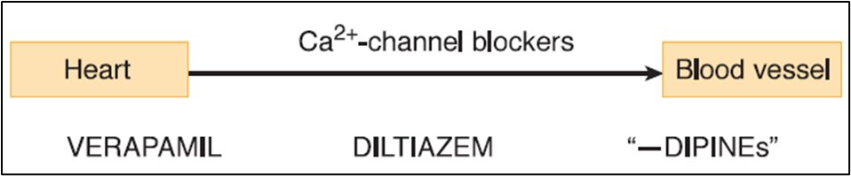
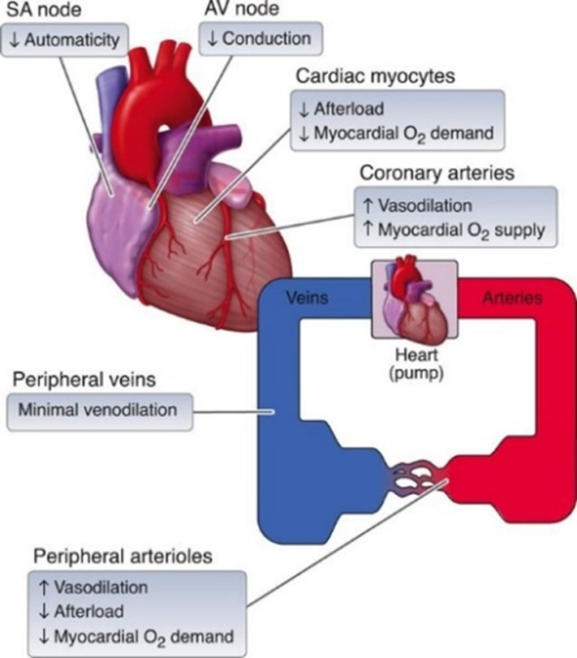
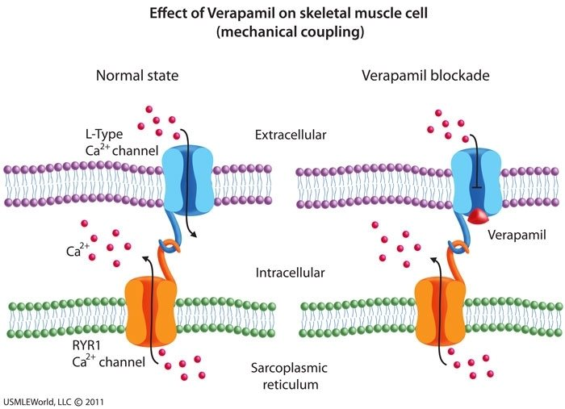
Q: Which first-line antihypertensive class most often causes ankle edema, and why doesn't a diuretic fix it well?
Dihydropyridine CCBs — arteriolar (pre-capillary) dilation raises transcapillary hydrostatic pressure; it's not volume overload, so diuretics help little. Board add-on Adding an ACEi/ARB (venodilation) reduces it.
Q: Which CCB causes the most reflex tachycardia, and why?
Nifedipine (especially immediate-release): strong vessel selectivity drops SVR quickly → baroreflex → sympathetic tachycardia, with no nodal blocking to blunt it.
Thiazides first-line · K⁺-sparing add-ons
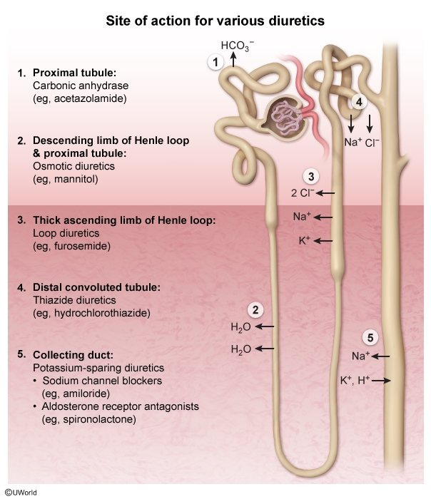
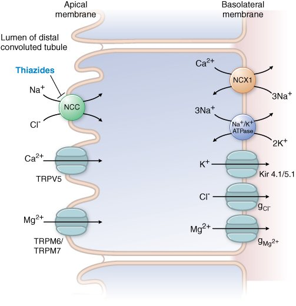
MOA: competitive antagonist of NCC on the luminal membrane of DCT cells → natriuresis → ↓ intravascular volume → ↓ preload → ↓ CO → ↓ BP. Also a direct vasodilatory effect (mechanism not well understood).
Indications: hypertension (first line) · edema (adjunct) · ↓ calcium excretion → osteoporosis, nephrolithiasis.
PK: high oral bioavailability, long duration of action.
AEs: hyponatremia · hypokalemic metabolic alkalosis · hyperuricemia → gout · photosensitivity · impaired glucose tolerance (↓ insulin release and tissue glucose use) · hyperlipidemia (↑ cholesterol, LDL).
HyperGlycemia, hyperLipidemia, hyperUricemia, hyperCalcemia — plus hypo-Na⁺, hypo-K⁺, metabolic alkalosis, photosensitivity.
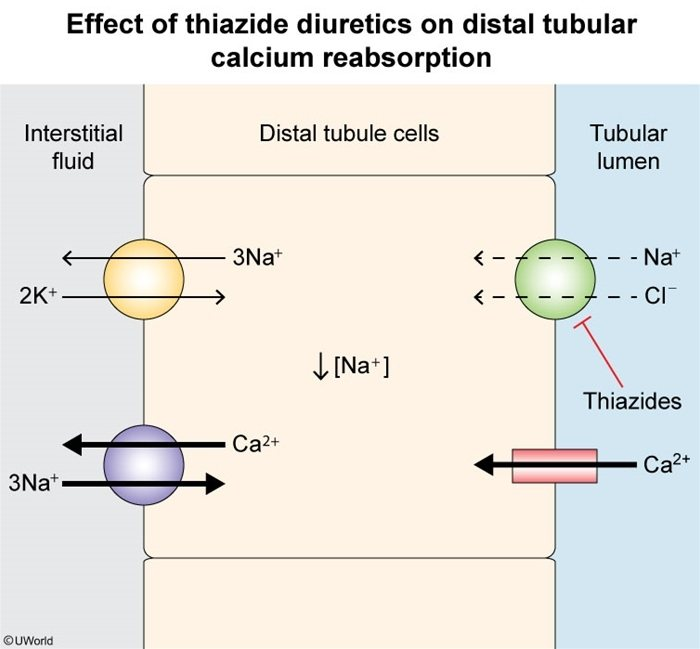
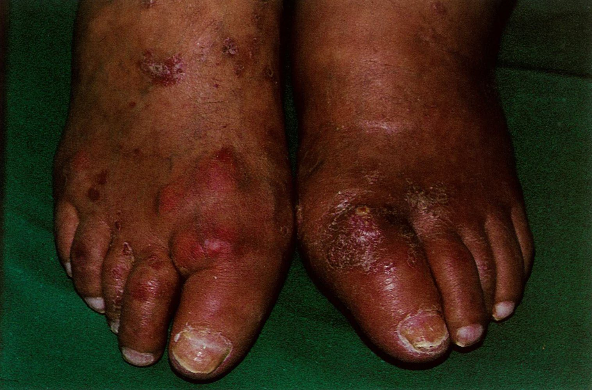
Unlike other diuretics, they increase K⁺ reabsorption, by interrupting Na⁺ handling in principal cells of the collecting duct.
MOA: bind the MR and prevent its nuclear translocation → fewer Na⁺ channels made.
Indications: hypertension, edema, hypokalemia, hyperaldosteronism.
PK: doesn't need albumin binding or glomerular filtration → works in liver failure and nephrotic syndrome.
AEs: hyperkalemia, hyperchloremic metabolic acidosis, agranulocytosis; spironolactone only: gynecomastia, impotence, abnormal menstruation (↑ testosterone clearance, ↑ estradiol, blocks the androgen receptor).
CI: pregnancy (anti-androgenic).
MOA: competitive inhibition of ENaC in the apical membrane of the principal cell.
Indications: amiloride — hypertension, heart failure · triamterene — edema.
AEs: hyperkalemia, hyperkalemic metabolic acidosis, electrolyte imbalances, dyspepsia, headache.
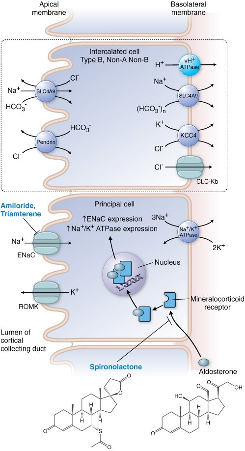
Q: A hypertensive patient with recurrent calcium oxalate stones and osteopenia — which antihypertensive helps all three, and how?
A thiazide: NCC blockade lowers cell Na⁺ in the DCT → more basolateral Na⁺/Ca²⁺ exchange → ↑ Ca²⁺ reabsorption → less urinary calcium, more for bone.
Q: A man on spironolactone for resistant hypertension develops tender breast enlargement. Mechanism, and what swap avoids it?
Spironolactone blocks androgen receptors and shifts testosterone → estradiol. Switch to eplerenone (more MR-selective) Board add-on.
Race-agnostic prescribing · the pregnant patient
The harm is greatest in the 2nd and 3rd trimesters. She shouldn't panic — switch to another agent.
| Drug | Mechanism | Why it's safe / why chosen | Cautions (ACOG) |
|---|---|---|---|
| Labetalol | 3rd-generation β-blocker: β1/β2 + α1 antagonist | Blocking α1 prevents the reflex vasoconstriction that follows ↓CO — so placental blood flow is preserved (metoprolol would reduce it) | Bronchoconstriction — avoid in asthma, myocardial disease, decompensated HF, heart block, bradycardia |
| Nifedipine (ER) | DHP CCB → ↓ SVR | One of ACOG's top three; effective | Not sublingual; immediate-release only for severe acute BP in hospital; avoid in tachycardia |
| α-Methyldopa | Like clonidine — central α2 agonist → ↓ sympathetic outflow → ↓ CO and SVR | Longest safety record (data to 7 years in offspring) | Less effective; sedation, depression, dizziness |
| Hydrochlorothiazide | Thiazide | — | Second- or third-line |
| Hydralazine | Direct arteriolar vasodilator | — | Acute management only |
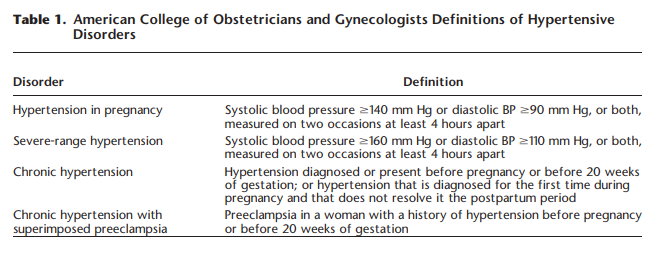
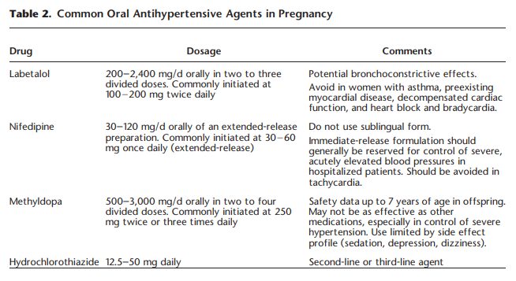
| Disorder | Definition |
|---|---|
| Hypertension in pregnancy | SBP ≥140 or DBP ≥90, two readings ≥4 h apart |
| Severe-range | SBP ≥160 or DBP ≥110, two readings ≥4 h apart |
| Chronic hypertension | Before pregnancy or before 20 weeks, or first found in pregnancy and not resolved postpartum |
| Chronic HTN with superimposed preeclampsia | Preeclampsia in a woman with hypertension before pregnancy or before 20 weeks |
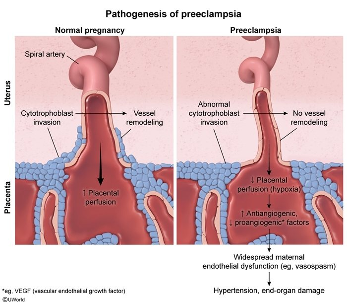
Q: Why is labetalol preferred over metoprolol for a pregnant patient with hypertension?
Blocking β1 alone lowers CO and triggers sympathetic vasoconstriction, including of the placental bed. Labetalol's α1 blockade prevents that, lowering BP while preserving placental flow.
Q: How does α-methyldopa lower blood pressure?
A central α2 agonist like clonidine (Board add-on via its metabolite α-methylnorepinephrine) → presynaptic Gi brake → ↓ sympathetic outflow → ↓ CO and SVR.
The four lecture cases, worked
Relaxed, pleasant. BP 142/98, HR 88, RR 10, SpO₂ 95%. Otherwise unremarkable. Counselled on diet/exercise, prescribed lisinopril, follow-up in 2–4 weeks.
Adherent; diet/exercise hard to keep up. BP 126/84 (matches home readings). Persistent non-productive cough; "feels fine"; COVID and other respiratory infections negative.
Prenatal visit showed 158/110; today 160/114.
5-year history of hypertension; no diabetes, CKD, CAD or HF. Non-smoker; 2–3 drinks daily. BMI 31. BP 168/104, then 164/102 and 170/106 over 2 weeks. No bruits, edema or HF signs.
Conversation starters from the slide:
Q: (Case 1) A 76-year-old with BP 142/98 is started on lisinopril. What is the mechanism of action?
Inhibits angiotensin-converting enzyme → prevents angiotensin I → II (less vasoconstriction and aldosterone) and prevents bradykinin breakdown (more vasodilation).
Q: (Case 4) What's the most appropriate initial regimen for a 56-year-old with repeated BPs around 168/104 and no comorbidities?
Two complementary first-line drugs, preferably a single pill — e.g. amlodipine + an ACEi/ARB — plus alcohol reduction and weight loss.
Every short form used in these notes
Scully · OMK 2 Cardio · LO1 name/indication/MOA/AE/CI/DDI · LO2 apply to cases
| Drug (class) | MOA | Key indications | Key adverse effects | Contraindications / DDIs |
|---|---|---|---|---|
| Captopril, lisinopril, enalapril (ACEi) | Inhibit ACE; ↑ bradykinin | HTN, HF | HyperK, angioedema, dry cough | Angioedema hx, pregnancy; + ARB/aliskiren |
| Losartan, valsartan (ARB) | AT1R antagonist | HTN; DN (losartan); HF, MI (valsartan) | Rhabdo, hepatotoxicity, renal failure, diarrhea, hyperK | Pregnancy; + ACEi; + aliskiren in DM |
| Aliskiren (renin inhibitor) | Blocks renin | HTN | HyperK | Pregnancy; any other RASi |
| Amlodipine, nifedipine (DHP CCB) | L-type block, vessels | HTN, angina; pregnancy | Reflex tachycardia, edema, flushing, headache | IR nifedipine only acute |
| Diltiazem / verapamil (non-DHP) | L-type block, heart ± vessels | HTN + AF, angina | Bradycardia, AV block, ↓ contractility | + β-blocker |
| Hydrochlorothiazide | NCC block (DCT) | HTN, edema, Ca²⁺ stones, osteoporosis | ↓Na, ↓K alkalosis, gout, ↑glucose, ↑lipids, photosensitivity | — |
| Spironolactone, eplerenone | MR antagonist | HTN, edema, hypoK, hyperaldosteronism | HyperK, acidosis, gynecomastia (spiro) | Pregnancy |
| Amiloride, triamterene | ENaC block | HTN, HF (amiloride); edema (triamterene) | HyperK, acidosis | — |
| Labetalol | β + α1 antagonist | HTN in pregnancy | Bronchoconstriction, bradycardia | Asthma, heart block |
| α-Methyldopa | Central α2 agonist | HTN in pregnancy | Sedation, depression, dizziness | — |
| Prazosin | α1 antagonist | HTN + BPH | First-dose hypotension Board | + clonidine |
| Hydralazine | Direct arteriolar dilator | Acute HTN in pregnancy | Reflex tachycardia Board | — |